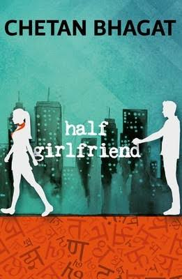
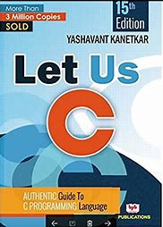
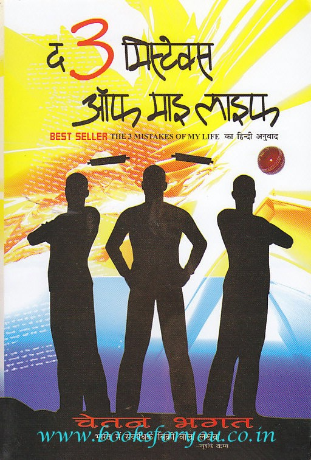

About Author
Rhonda Byrne is the creator and Executive Producer of the film The Secret and Author of the Books The Secret,
The Power,The Magic,Heroand How The Secret Changed My Life. Rhonda Byrne was born in Australia and began
her carrer as a radio producer befor moving into television production. Her The secret Documentary film viewed by
million across the planet. The Secret book a worldwide best seller available in more than 50 language with over 34
million copies in print.
About The Secret The Secret is Relistic Presentation of Natural Phenomenon of energy Sorrounding us i,e; Law Of Attraction That Claims
Thoughts can change a person's life directly. Because this is self-help book about the power of Positive thinking. The
Pseudo-Scintific theory "Law of Attraction" -the Principal is Like attracts Like ! Byrne writes "Your Life right now is a
Reflection of your past Thoughts." According to Byrne, the mind is a Magnet, emitting and recieving frequencies to and
from the Universe. Each thouhgt sends out a signal, which is turn gathers similar frequencies- due to Law of Atraction -
before returning back to you. In this Fashion, your mind can bring you anything you desire.

Half GirlFriend
About AuthorChetan Bhagat is an Indian author and Columnist. He is a rising star in the contemporary modern indian Litrature ,is a
Multitalented personality. His notable works include Five Point Someone, The Mistakes of My life, 2 States and
many more. Half GirlFriend is one of these. Most of his literacy works address the issues related to Indian youth and their
aspirants which earned Bhagat status of youth icon. His book have remained bestsellers since their release. Five out of his
all Novels have been already adapted into sucessfull Bollywood films and the others are in process of being adapted as well.
The New York Times called him the "The biggest selling English language novelist in India" and Time Magazine named him
amongest the "100 most influential people in the world"!!
About half girlfriend
Half Girlfriend is very cleverly marketed as a story of Madhav, a Hindi speaking Bihari who falls in love with Riya, an elite
Delhi girl at the prestigious St. Stephen’s College. It deceives you into believing that the story would revolve around the
travails of a person who cannot speak English. Madhav is heartbroken, and after completing his graduation he ditches his
high-paying corporate offer and moves back to his village Dumraon, helping his mother with running the village school.
Now running a school requires funds, and his mother, the Rani Sahiba of Dumraon, has been paying out everything off her
own pocket to support and run it as politics and political leaders have stashed in all the government funds. Gates Foundation
visiting India, and now the political leaders turn to better the school in order to better their own image. Madhav latches
on to this opportunity, but there’s a catch – he has to deliver a speech in English to the world’s richest man to secure the
funds. St. Stephens hadn’t bettered Madhav’s English, and to brush it up for the speech, he decides to visit Patna, where he
has a chance encounter with Riya, and their friendship blossoms once again. Riya helps Madhav with his English, and
disappears after he delivers the speech and secures the grant for his school, leaving behind a letter in which she reveals that
she has cancer and just has three more months of life left in her.
The Girl In Room 105
About AuthorChetan Bhagat is an Indian author and Columnist. He is a rising star in the contemporary modern indian Litrature ,is a
Multitalented personality. His notable works include Five Point Someone, The Mistakes of My life, 2 States and
many more. The Girl In Room 105 is one of these. Most of his literacy works address the issues related to Indian youth and
their aspirants which earned Bhagat status of youth icon. His book have remained bestsellers since their release. Five out of
His all Novels have been already adapted into sucessfull Bollywood films and the others are in process of being adapted as
well. The New York Times called him the "The biggest selling English language novelist in India" and Time Magazine named
him amongest the "100 most influential people in the world"!!
About The Girl in Room 105
Keshav is an IITian who works as a teacher in JEE tuition center called ‘Chandan Classes’. He hates his job and reaches
out through LinkedIn, but fails to find a proper job. He is a part of an orthodox family. His mother is a homemaker
and his father is a part of the RSS, which is a political party in India. As always, he has a love story with a colleague
called Zara, who is currently pursuing her Ph.D. in IIT. Zara is from a Kashmiri Muslim family and their love story ends
due to their families, who fight over religious issues. Let’s not get into that. If you are an Indian and reading this,
you would know the issues an inter-religion couple would face in the country. Keshav couldn’t come out of the affair and
keeps remembering Zara, who then loves Raghav(Keshav’s classmate). Raghav happens to be an intelligent person with a
geeky look. Keshav often calls Zara begging her to come back to him, but she never agrees. Saurabh also works in
‘Chandan’s Classes’. He is from NIT and is a friend of Keshav. He helps Keshav forget his past love and focus on his
future.

Let Us C
About Author
Yashavant Kanetkar is an Indian computer science author, known for his books on programming languages. He has authored
several books on C, C++, VC++, C#, .NET, DirectX and COM programming. He is also a speaker on various technology
subjects and is a regular columnist for Express Computers and Developer 2.0. Some of his most well-known books include
Let Us C, Understanding Pointers In C and Test Your C Skills. He received the Microsoft Most Valuable Professional award
for his work in programming from Microsoft for five consecutive years. He obtained his B.E. from Veermata Jijabai
Technological Institute and M.Tech from IIT Kanpur. He is the director of KICIT, a training company, and KSET.Both these
companies are based in Nagpur.
About Let Us C
Let us C is a book of "C programming Language". this book is completely for beginers, befor that have no idea about any
Programming Language. In this book writer cover all basic to advanced concept of C language standard. Here describe
every features of C Languge like Array, Function, Recursion, Preprocessor, File Handling, Pointer etc with detailed
explanations with examle. this is continue reading for better Understandingof C language.

The Mistake of My Life
About Author Chetan Bhagat is an Indian author and Columnist. He is a rising star in the contemporary modern indian Litrature ,is a
Multitalented personality. His notable works include Five Point Someone, The Mistakes of My life, 2 States and
many more. Three Mistake of My Life is one of these. Most of his literacy works address the issues related to Indian youth and
their aspirants which earned Bhagat status of youth icon. His book have remained bestsellers since their release. Five out of
His all Novels have been already adapted into sucessfull Bollywood films and the others are in process of being adapted as
well. The New York Times called him the "The biggest selling English language novelist in India" and Time Magazine named
him amongest the "100 most influential people in the world"!!
About The 3 Mistake Of My Life
In late-2000, a young boy in Ahmedabad called Govind dreamt of having a business. To accomodate his friends Ish and
Omi’s passion, they open a cricket shop. Govind wants to make money and thinks big. Ish is all about nurturing Ali, the
batsman with a rare gift. Omi knows his limited capabiltiies and just wants to be with his friends. However, nothing
comes easy in a turbulent city. To realize their goals, they will have to face it all – religious politics, earthquakes, riots,
unacceptable love and above all, their own mistakes. Will they make it? Can an individual’s dreams overcome the
nightmares offered by real life? Can we succeed despite a few mistakes. Enter Omi’s Bitoo mama (maternal uncle),
a communal party man bent on converting the young into fighters in the name of Hinduism. Situations come to a head
and Ahmedabad burns in riot fires. Omi dies saving Ali and Ishan finds out about Vidya and Govind, a
betrayal he does not forgive. These events lead Govind to his death-bed and that is when he writes the email to Bhagat.